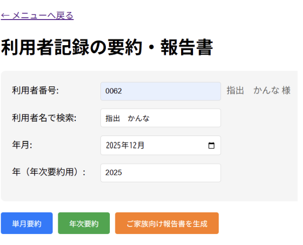

AIケア記録要約システム
ケアマネジャーの記録要約業務を、AIで大幅に効率化
Overview
ケアマネジャーが行う「利用者の介護記録をまとめ、ご家族へ伝える」業務を支援するシステム。日々の介護記録やケアプランをもとに、全体の総括・状態の推移・項目別評価（健康管理／医療処置／食事／排泄／入浴／睡眠／アクティビティ）を自動生成し、家族向けの報告書まで出力できます。
Tech Stack
Role / Period
450時間の長期インターン ／ インターン生2名（環境構築・テストデータ作成は企業様、メイン開発は一人で担当）
Highlights
- 業務量の大幅削減 ケアマネジャーが利用者一人につき膨大な情報を手作業でまとめる工程をAIに任せることで、作業時間を大きく短縮した。
- AIの誤情報を防ぐ精度設計 要約が不正確だと現場の混乱を招くため、AIに渡す前のデータ整形・プロンプトによる厳密なルール付け・出力制御に注力し、「事実に基づいた情報のみ抽出」する仕組みを構築した。